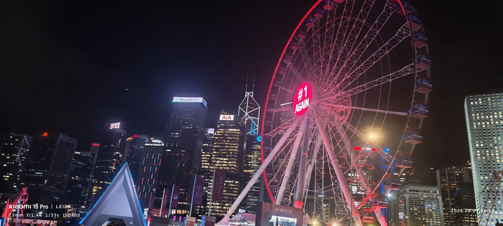
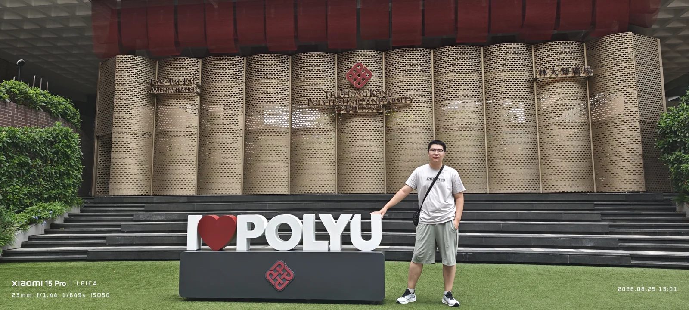
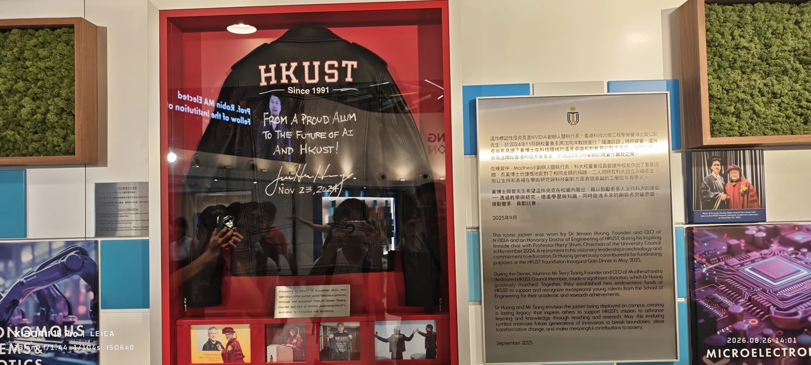
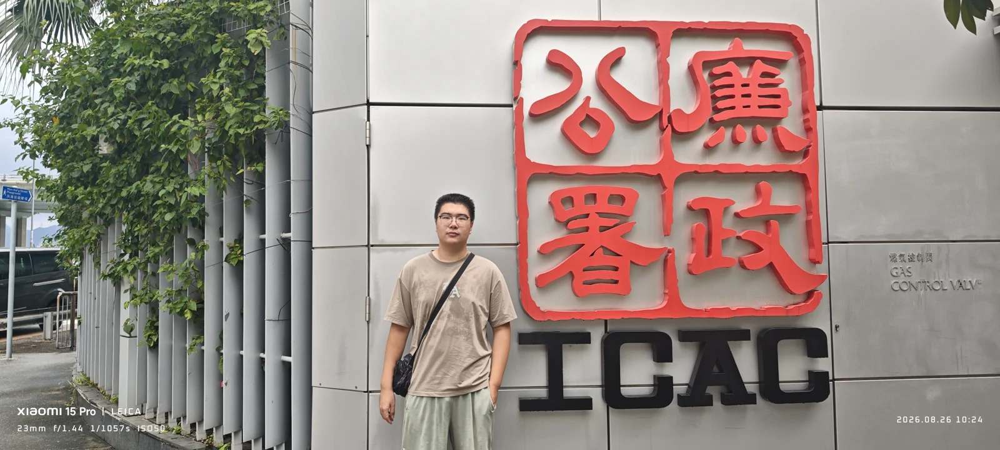
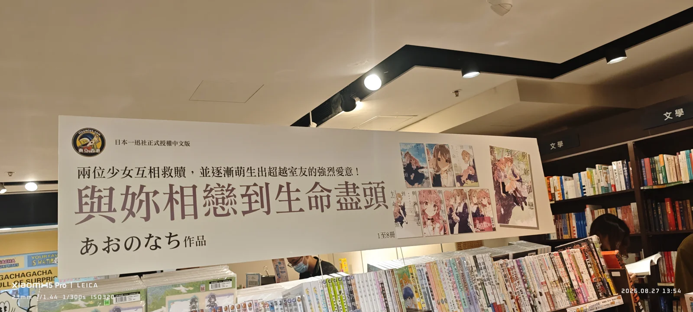
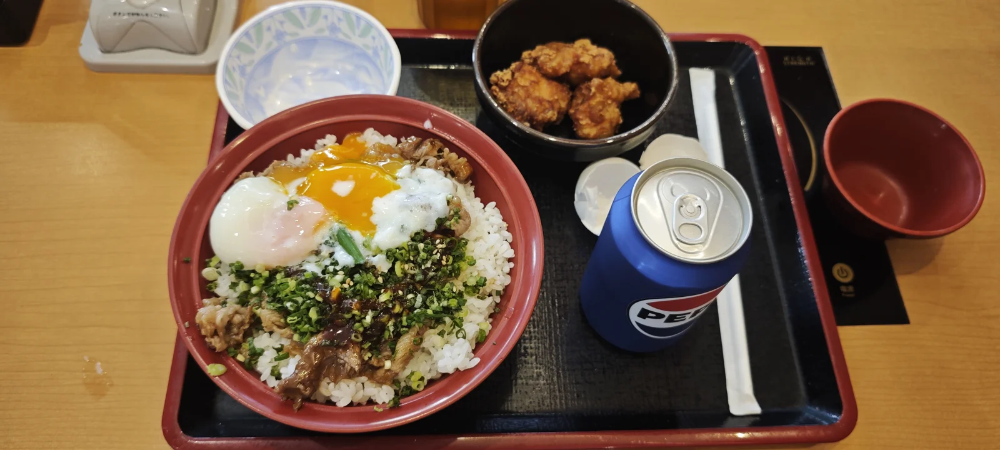

Travel journal · August 23–29
Hong Kong
A week in Hong Kong.
I spent a week in Hong Kong, from August 23 to 29. What stayed with me most was the sense of freedom. I could walk into a bookstore and find books and perspectives I rarely came across back home. Even something as simple as browsing the shelves felt new to me. Here are some photos and stories from those seven days.

01 / By the water
Hong Kong after dark
I took this photo by the harbour at night. The Observation Wheel was glowing red, and the buildings behind it were still lit up. This is how I remember the waterfront after dark.
02 / University stops
PolyU and HKUST
I also visited PolyU and HKUST during the week. I took a photo by the entrance at PolyU, and at HKUST I came across Jensen Huang's jacket. There was a story behind it, which I'll share below.

My stop at PolyU
Here's my photo by the I ♥ PolyU sign, next to the stone wall at the entrance. A keepsake from my visit to Hong Kong Polytechnic University.

Jensen Huang's jacket at HKUST
I photographed this jacket at HKUST. The plaque beside it explains that Jensen Huang wore it during a fireside chat with Professor Harry Shum in November 2024. He also left a handwritten message on it:
“From a proud alum to the future of AI and HKUST!”— Jensen Huang, handwritten on the jacket, November 23, 2024
What I learned from the plaque is that the jacket later became part of a fundraiser. Huang donated it for the HKUST Foundation's inaugural gala dinner in May 2025. Alumnus Terry Tsang made a donation, and Huang matched it. Together, their donations established two endowment funds for students in the School of Engineering.
Huang and Tsang asked for the jacket to stay on campus, which is why I could see it here. So there's more to this photo than a signed jacket: it also tells the story of support for the students studying here.
I've retold the story from the plaque and the inscription in my photo, taken on August 26, 2026. The plaque is dated September 2025. You can read it in my original photo ↗
03 / Around the city
A few more stops from my week
I took a photo outside ICAC, bought books in Mong Kok, and almost lost those books after lunch. That last part definitely wasn't in the plan.

Outside ICAC
I stopped for this photo outside ICAC, beside the red lettering and the sign. Another stop I wanted to keep in my album from this week.

Browsing books at MOKO
One thing that surprised me at the MOKO bookstore in Mong Kok was how many boys' love (BL) and girls' love (GL) books I could find. I wasn't used to seeing them displayed so openly in mainland bookstores. Here, they had whole displays with large illustrations. Being able to browse them like any other books felt quite new to me.
From what I saw, they were popular with both local readers and tourists. Some of the young women browsing were especially enthusiastic! For me, this was one of the clearest examples of the freedom I felt in Hong Kong: people could openly enjoy and share the stories they liked.
I bought a few books here, too. Keep those in mind—they turn up again in my lunch story below.
A closer look at the manga in my photo
The title on the big sign is I Want to Love You Till Your Dying Day by Nachi Aono. It's a girls' love manga, rather than a prose novel, and you can see the Chinese-language editions of volumes 1–8 in my photo.
To give you an idea of the story without spoiling it: it's set at an orphanage where children are trained to fight with magic. Sheena wants the fighting to end, while her new roommate, Mimi, is immortal. The two grow close despite their very different experiences of death. It's a dark fantasy setting for a story about their relationship.
For the story summary, I'm using the official book description.

Lunch at Sukiya, and the books I almost lost
This was my lunch at Sukiya: a rice bowl, some side dishes, and soup. But the reason I remember this meal so well has more to do with the books I'd bought at MOKO. I left them in the restaurant when I finished eating.
I didn't realize until I was back at the hotel. I went back to the shop, and luckily a staff member had kept them safe for me. I was so relieved to find them there, safe and sound.
After that, I kept going back to the same Sukiya during my stay. Eating there again was my small way of saying thank you. That's the story behind what otherwise looks like an ordinary lunch photo.